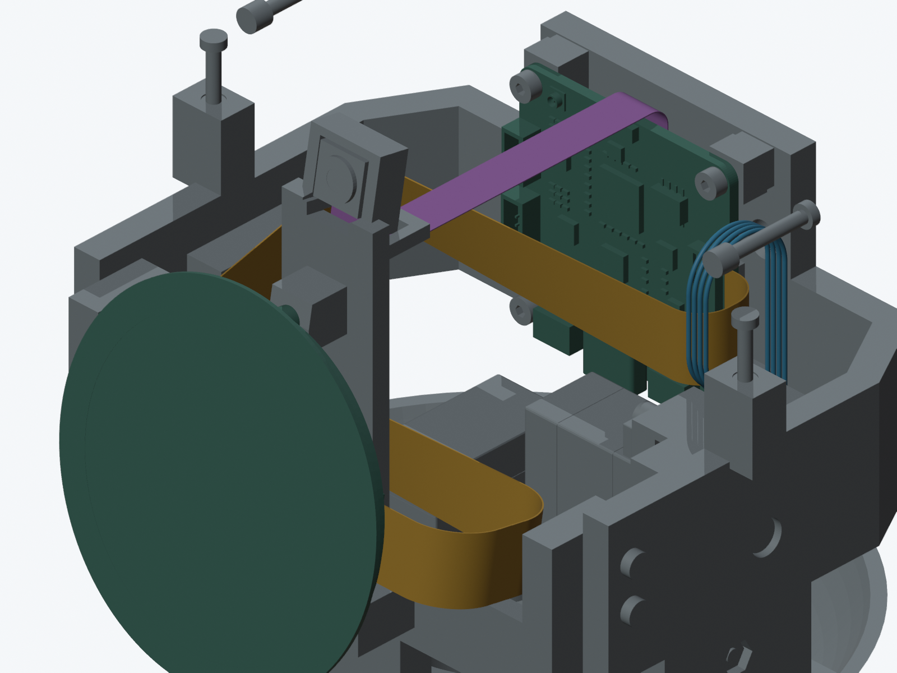
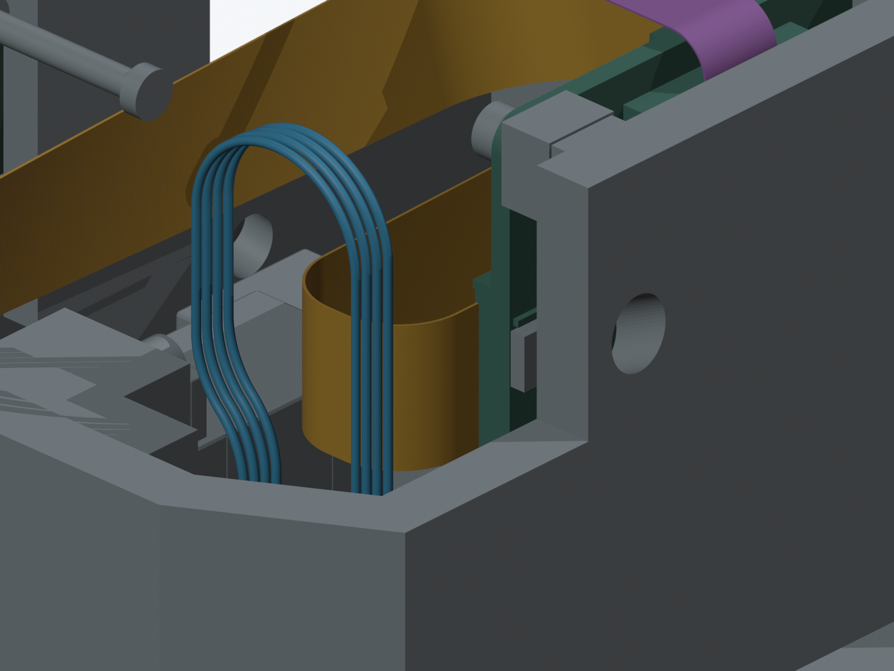

线束总进展 · 官方入口方向证据
屏幕完整自由段已通过空间检查，实际排线仍待定型
主模型 M1.49 C5＋K1 保持。这里是通道容量研究，未采用新打印结构、未选定排线、未发生产图；完整线束仍为 BLOCKED。

金色：194 mm屏幕自由段；紫色：相机通道假设；蓝色：四根CAM导线候选。路径颜色用于诊断，均不表示已采购或已验证实物。外壳隐藏，部分原壳螺钉因此单独可见。
屏幕：避开舵机，也避开左侧导线
后侧回弯采用R5容量假设，收在CAM四根线的内侧；剩余弯为R7.5。原厂200 mm长度按194 mm自由段＋6 mm两端预算研究，端部实际插深和补强长度仍未知。
| 检查 | 结果与范围 |
|---|
| 头部130个姿态 | PASS：3408组邻近刚性对象，1430组候选导线；导线净距下界约0.409 mm。 |
| 排线自身与头壳 | PASS：66组非相邻分段；前后壳各273个平移位置。 |
| 真实端部与材料 | BLOCKED：插座/线材型号、补强区、触点面、允许弯曲及固定、装入尚未确认。 |

这是收在导线内侧的独立候选。先前较外侧回弯虽避开舵机，却会穿过四根CAM导线，失败记录保留。
最关键的选型条件：当前基准后只有2 mm直线，约在插座包络边外2.6 mm处开始弯曲。补强片如果延伸到这里，候选就不成立。R5不是厂家的允许弯曲半径，空间检查不证明材料可承受。
相机：通道约81.98 mm，末段侧隙仍很紧
末端增加2 mm直线，可避免早期圆弯直接碰座边。但按6.6 mm宽的假定细尾，名义侧隙仅0.3 mm，加入离散误差后的保守检查未通过。原配FPC完整长度、宽窄变化和出尾细节尚不完整；没有改卡座或选任意延长线。
完整线束尚未完成
除了真实排线接口，还需完成固定和带线装入；C6及导线约束结构未采用，CAM穿线和反力连杆装配仍有未解决项。这些没有被改称为“只等实物”。
可编辑 Blender 候选 · 给选型/供应商核对的尺寸条件（非生产图） · 详细结论
130姿态与导线检查 · 壳路径与自身检查 · 相机边界检查 · 12次执行与保留失败 · 主文件保留检查
最初刚性碰撞定位 · 较外侧回弯的导线碰撞 · 回弯内收的有限比较